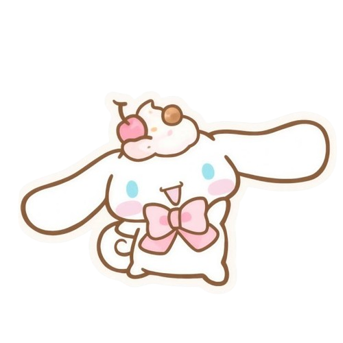

Cinnamoroll es un perrito blanco creado por Sanrio. Se caracteriza por sus largas orejas, sus mejillas rosadas y su pequeña cola que tiene forma de rollito de canela.
Es un personaje amable, tranquilo, cariñoso y muy querido por sus amigos.
Cinnamoroll vive junto a sus amigos y comparte muchas aventuras con ellos. Entre sus amigos están Mocha, Chiffon, Cappuccino, Espresso y Milk.
Juntos se divierten, se ayudan y disfrutan de diferentes momentos en el Café Cinnamon.
Un día, Cinnamoroll fue encontrado por la dueña del Café Cinnamon cuando era todavía un pequeño cachorro.
Desde entonces comenzó a vivir en el café junto a sus amigos y tuvo muchas aventuras. Su personalidad dulce y amable hace que todos lo quieran.